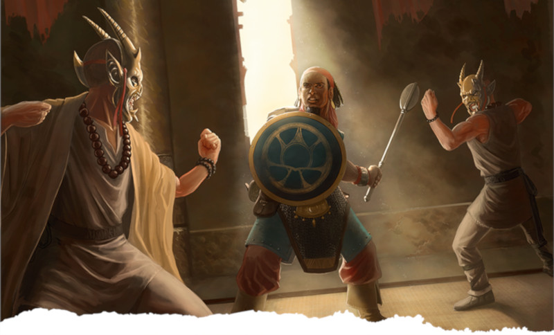

Voie de la paume
La voie de la paume fait instantanément penser aux stars du cinéma d'action hongkongais, comme Bruce Lee, Jackie Chan et Cheng Pei-Pei, peut-être même plus qu'aux arts martiaux réels ! Et c'est normal, parce que le système de combat quelque peu abstrait de D&D encourage les actions cinématographiques au détriment du réalisme. Au passage, bien que la classe porte le nom de « moine », effacez vite toutes les images de frère Tuck qui apparaissent dans votre esprit. Le nom de la classe a probablement été inventé en référence aux moines Shaolin, réputés pour leurs prouesses en arts martiaux, mais la classe de moine n'a aucun lien avec la foi, contrairement aux moines chrétiens de l'Europe médiévale ou aux moines bouddhistes de la Chine ou du Japon féodal.
Lors de la création d'un moine, en particulier s'il suit la voie de la paume, essayez de penser à des histoires mettant en scène des combattants monastiques, qui se battent au nom d'une organisation ou d'un idéal philosophique, plus que d'une foi ou d'un dieu. Pour les moines qui utilisent des armes en plus des attaques à mains nues, pensez aux souhei, ces moines guerriers du Japon féodal, en particulier pendant la sengoku-jidai, la période des Royaumes combattants. Ces guerriers monastiques ont souvent combattu avec des arcs et des lances naginata, comme n'importe quel soldat sensé de l'époque. Pour un exemple non historique, pensez aux chevaliers Jedi de Star Wars et à la manière dont leur style de combat mêle armes, sorcellerie et philosophie.
Enfin, assurez-vous de lire l'encadré « Ordres monastiques » dans le Manuel des Joueurs. On y explique que, bien que la plupart des monastères qui enseignent un art martial dans les Royaumes oubliés soient d'origine Shou, et donc typés « Asie de l'est », les monastères dédiés aux dieux plutôt qu'aux idéaux ou aux philosophies sont courants sur la Côte des épées. La classe de moine n'est en fait pas monolithique, pas plus que la voie de la paume. C'est un peu comme les différences entre les films d'arts martiaux de Hong Kong et d'Hollywood ; le sujet est similaire mais le contenu, le ton et l'approche sont très différents.
Capacités de la voie de la paume
La voie de la paume est la plus emblématique de la classe de moine. En tant que tel, les capacités de la sous-classe tendent à renforcer les points forts de la classe et à laisser ses faiblesses identiques. Elles permettent de manipuler non seulement le ki (l'énergie) de votre corps, mais également le ki d'autres créatures. En règle générale, ces capacités vous permettent de nuire aux ennemis ou de soigner les dommages causés à votre corps. Le moine a accès à quatre capacités de sous-classe en plus des capacités de classe, qu'il acquiert à des intervalles de plus en plus espacés aux niveaux 3, 6, 11 et 17. En résumé, ces capacités de sous-classe permettent :
- D'utiliser les arts martiaux pour entraver les mouvements ou les réactions de vos ennemis.
- De manipuler votre propre ki pour soigner vos blessures.
- De vous entourer d'une aura de paix.
- De tuer une créature d'un seul coup.
Avantages de la voie de la paume
Les moines qui suivent la voie de la paume s'appuient principalement sur des compétences en arts martiaux plutôt que sur des pouvoirs surnaturels, ce qui les rapproche davantage de Cheng Chao-an (le protagoniste des combats de rue de Bruce Lee dans The Big Boss) que de Yin Chik-ha (prêtre taoïste qui affronte des fantômes dans A Chinese Ghost Story).
En tant que tel, votre sous-classe vise à faire de vous un combattant au corps à corps bien équilibré du point de vue offensif et défensif, et elle y parvient rapidement. La technique de la paume, votre première capacité de sous-classe, offre une grande variété de tactiques offensives qui permettent de manipuler la position des ennemis sur le champ de bataille. Mettre à terre un ennemi peut créer un combo dévastateur avec l'Attaque sournoise d'un roublard sur des champs de bataille qui comportent des terrains dangereux comme des fosses acides ou de la lave, et pouvoir pousser une créature de 4,50 m couplé avec les effets d'un sort comme rayon de lune en font une capacité de niche qui peut être fort utile.
Intégrité physique n'est pas aussi utile que le Second souffle d'un guerrier en combat, mais cela peut quand même apporter des soins supplémentaires entre les batailles. Heureusement, il évolue mieux que Second souffle, ce qui le rend utile même à des niveaux plus élevés. De même, Tranquillité ne doit pas être sous-estimée en tant que capacité défensive, car obtenir les effets de sanctuaire durant toute une journée, ou jusqu'à ce que vous soyez agressif, vous protège des embuscades lors de la première rencontre de la journée. Ce n'est pas forcément ce qui se fait de mieux pour de grands donjons, mais cela peut être utile lorsque vous parcourez de longues distances, comme dans la jungle de Chult ou la Frontière sauvage de Faerûn.
La caractéristique la plus excitante de cette sous-classe, au niveau 17, est Paume frémissante. En dépensant 3 points de ki, vous pouvez remplir le corps d'une créature de vibrations imperceptibles qui durent un nombre de jours égal à votre niveau de moine. À tout moment, vous pouvez utiliser une autre action pour transformer ces vibrations en une perturbation mortelle du ki de cette créature, la forçant à réussir un jet de sauvegarde de Constitution pour ne pas mourir sur le champ. Et même en cas de réussite, la créature subit une quantité de dégâts significative. Le pouvoir de tuer une créature instantanément en cas d'échec au jet de sauvegarde est toujours impressionnant, et son faible coût en ki la rend encore plus attrayante. Certes, les créatures qui peuvent instantanément réussir un jet de sauvegarde grâce à Résistance légendaire ne seront pas trop intimidées par cette capacité, mais l'idée de tuer un dragon rouge ancien en l'incitant à dépenser ses Résistances légendaires sur des sorts triviaux, pour ensuite le tuer seulement avec une Paume frémissante, fait frissonner n'importe quel moine.
Inconvénients de la voie de la paume
Le principal problème du moine est qu'il partagé entre être un guerrier de première ligne et un roublard furtif, sans être capable de faire les deux. Dépenser une action bonus pour Se désengager en utilisant Déplacement aérien est une bonne chose, mais cela vaut-il vraiment la peine de sacrifier votre action bonus pour attaquer deux fois de plus avec Déluge de coups ? Votre technique de la paume vous aide à désactiver les réactions d'un ennemi, permettant de foncer, d'attaquer et de vous échapper, mais cette sous-classe ne résout en rien le problème des points de vie médiocres du moine et de sa CA médiocre. Elle fournit bien certaines capacités défensives avec Intégrité physique et Tranquillité, mais aucune n'est extrêmement utile au cœur d'un combat. En résumé, la voie de la paume ne résout en rien les faiblesses emblématiques de la classe de moine, comme ses défenses médiocres, sa dépendance à un large éventail de capacités et son manque d'options d'attaques à distance.
Étant donné que vous ne possédez aucun pouvoir magique ni aucune maîtrise d'armes de guerre, votre capacité à combattre à distance est sévèrement limitée. Vous pouvez utiliser quelques armes de lancer, comme des hachettes ou des javelines, et certaines armes à distance, comme des arcs courts ou des arbalètes légères, mais il sera difficile de trouver des objets magiques qui soutiennent vos options limitées à distance. Une seule hachette +1 ne vous mènera pas loin. De toutes les options, la javeline de foudre est probablement la plus intéressante, transformant la javeline lancée en un éclair qui transperce toutes les créatures entre vous et votre cible. Les autres options sont simplement des types d'arme (comme arme vicieuse ou arme vigilante) pouvant s'appliquer à n'importe quelle arme.
Exemple de personnage
Si vous jouez un moine de niveau 1, vous devriez choisir une race qui améliore la Dextérité, la Constitution ou la Sagesse (idéalement deux des trois). La Dextérité rendra vos attaques plus fortes et plus précises, la Constitution vous accordera plus de points de vie donc vous permettra de rester plus longtemps en première ligne, et la Sagesse augmentera votre CA et empêchera les ennemis de résister à vos capacités martiales. Les elfes des bois gagnent un bonus à la fois en Dextérité et en Sagesse, faisant d'eux des combattants martiaux agiles et rusés. De même, les halfelins robustes gagnent un bonus à la fois en Dextérité et en Constitution, ce qui en fait des personnages agiles mais résistants. Et, comme toujours, les humains gagnent soit un petit bonus dans toutes les caractéristiques, soit un don en prenant la variante de l'humain, ce qui les rend flexibles. Une fois que vous avez hiérarchisé vos caractéristiques primaires, vous devez déterminer parmi la Force, l'Intelligence et le Charisme, quelles seront les plus fortes et les plus faibles. Une Force élevée vous aidera pour agripper une cible et vous évitera d'être maîtrisé dans les rares situations où votre Dextérité ne vous permettra pas de vous libérer des mains d'une créature. Une Intelligence élevée vous aidera à tirer le meilleur parti des compétences de savoir comme Religion et Histoire. Un Charisme élevé vous aidera à mieux interagir avec les PNJ et à nouer des alliances avec eux en leur montrant de la compassion ou en les intimidant pour qu'ils se soumettent.
Comme d'habitude, le background de votre personnage dépend de vous. Vous pouvez rendre votre personnage unique en choisissant des historiques inhabituels comme criminel, pour jouer un condamné qui s'est tourné vers une vie monastique par pénitence, ou suivre une voie plus traditionnelle en choisissant l'historique acolyte pour représenter quelqu'un qui se consacre à la foi depuis sa naissance.
Concernant l'équipement, choisissez une épée courte ou une autre arme de corps à corps courante de votre choix. Alors que d'autres combattants basés sur la Dextérité doivent se soucier de choisir des armes avec la propriété finesse, ce n'est pas obligatoire pour vous. Toute arme de moine, c'est-à-dire les épées courtes et les armes de corps à corps courantes qui ne possèdent pas la propriété à deux mains ou lourde, vous permet d'ajouter votre bonus de Dextérité aux jets d'attaque et de dégâts.
Vous ne choisirez pas la sous-classe de la voie de la paume avant d'atteindre le niveau 3 de moine, alors utilisez les deux premiers niveaux pour confirmer que cette voie est bien celle que vous voulez. Aimez-vous l'idée d'être un pratiquant des arts martiaux sans pareil ? Pensez-vous avoir besoin de plus de magie élémentaire ? Ou préféreriez-vous embrasser les ombres comme un ninja ? Si vous vous amusez, gardez le cap.
Dons
Une fois que vous atteignez le niveau 4 dans cette classe (ou même au niveau 1 si vous avez sélectionné la variante de l'humain), vous avez la possibilité de prendre un don ou d'améliorer vos valeurs de caractéristiques. En tant que moine, vous avez déjà beaucoup de flexibilité de par votre classe et vous voudrez monter beaucoup de caractéristiques le plus haut possible (Dextérité, Constitution et Sagesse), donc éviter complètement les dons n'est pas une mauvaise idée. Néanmoins, si vous souhaitez personnaliser davantage votre personnage, envisagez certains des dons suivants :
Athlète. Les moines sont déjà des combattants très mobiles, mais améliorer votre Force ou votre Dextérité tout en empêchant l'environnement de restreindre vos mouvements peut être un puissant avantage, bien que de niche.
Adepte martial. Ce don est intéressant. Si vous voulez être un combattant encore plus tactique, Adepte martial vous donnera accès à deux manœuvres de la sous-classe maître de guerre du guerrier, ce qui pourrait vous aider à réaliser des cascades comme au cinéma.
Mobile. Les moines sont déjà rapides, mais Mobile les rend presque impossible à ralentir, leur conférant un gain de vitesse supplémentaire, une immunité contre l'effet de ralentissement d'un terrain difficile lorsque vous effectuez l'action Foncer (que vous pouvez effectuer en tant qu'action bonus grâce à Déplacement aérien), et un moyen facile pour mettre fin aux attaques d'opportunité en attaquant simplement une créature. Avec toutes ces capacités à sa disposition, un moine avec le don Mobile peut se déplacer sur les champs de bataille les plus hostiles et lancer des attaques en toute impunité.
Résistant (Sagesse). Les moines maîtrisent les jets de sauvegarde de Force et de Dextérité, mais acquérir la maîtrise des jets de sauvegarde de Sagesse et améliorer cette valeur de 1 est un atout majeur pour se protéger contre les effets magiques. Notez toutefois que, si vous prévoyez de jouer à des niveaux élevés, ce don perd ensuite de la puissance, car vous maîtriserez tous les jets de sauvegarde lorsque vous atteignez le niveau 14 de moine.
Discret. Si votre groupe n'a pas de roublard, vous êtes peut-être celui qui se rapproche le plus d'un éclaireur ou d'un spécialiste en discrétion, et ce don vous aidera à mieux remplir ce rôle.

Basé sur un article de James Haeck, traduit par blueace